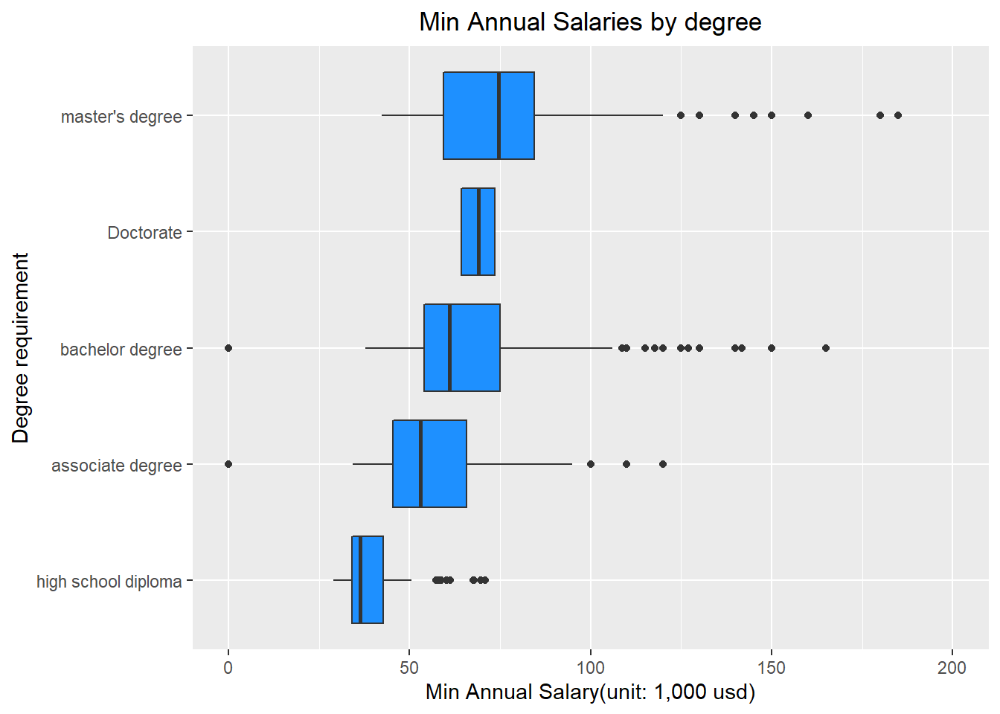
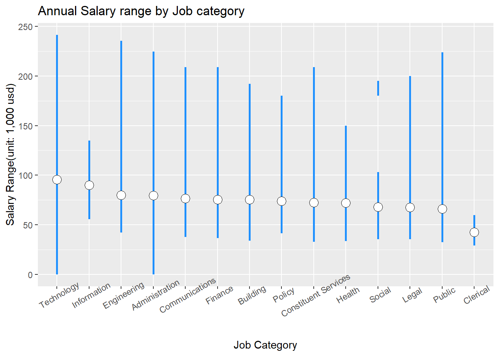

Chapter 5 Results
5.1 Most major job category
To help job seekers realize how many job postings are available for each job category and the competitiveness of various categories of jobs so that they can choose a more suitable job, We want to know the demand for different categories of jobs in New York city. From this job posting data variable “Job Category”, for each job posting, our group extract the job category that can best represent the job, and store them and their counts in a new data frame “category”.
From the graph above, we can find that the number of job posting for “Technology” is largest, which is more than 450, and the number of job posting for “Clerical” is smallest. For “Technology”, “Constituent Services”, and “Engineering”, these three job categories have the top three number of job postings. If people want to choose jobs from these categories, they will have more choices than people who choose from “Social”, “Information”, and “Clerical”.
5.2 Relationship of Salary & Category and Salary & Degree Requirement
For people who are finding jobs, the number of salary is always one of the most important information they are interested in. To make our graphs more useful and not to disappoint the job seekers, we choose the lower bound of salary range from each job posting whose salary frequency is annual as the value of salary. Then we create the box plots related to salary & job category and related to salary & degree requirement.
From the graph above,



5.3 5.5